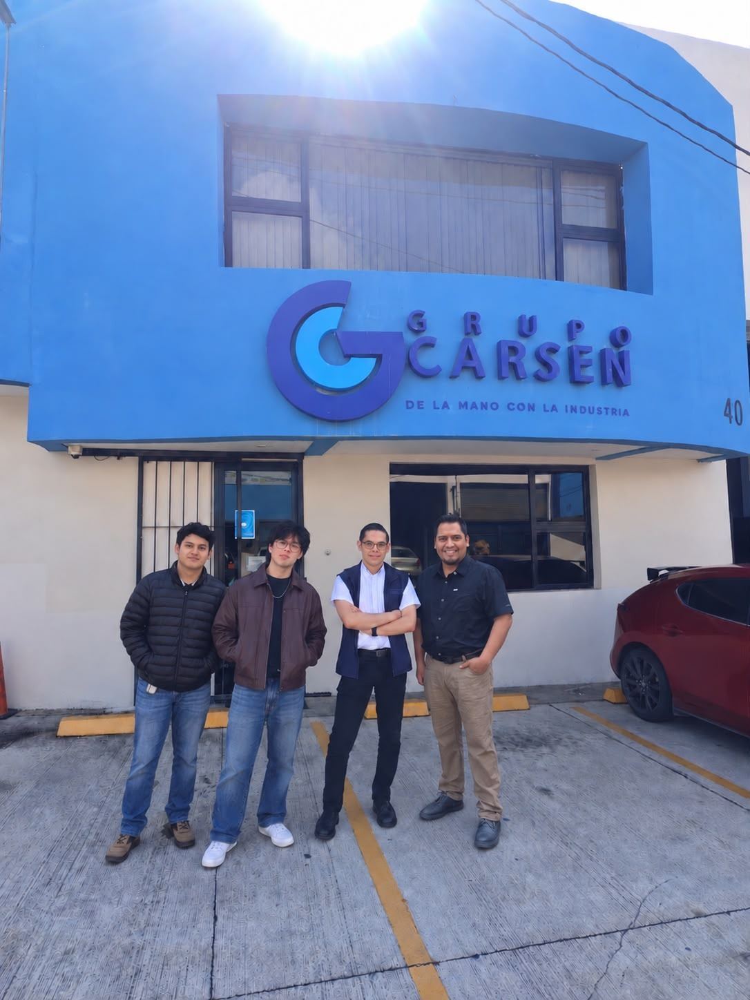

Grupo de trabajo

Escuela de Ingeniería en Sistemas de Información · Plan Fin de Semana · Investigación de Operaciones · Octubre de 2026
Agradecemos a Grupo Carsen, S.A. la apertura para observar su proceso de atención al cliente y entrevistar al personal del área de ventas. Sin ese acceso, este análisis no habría sido posible.